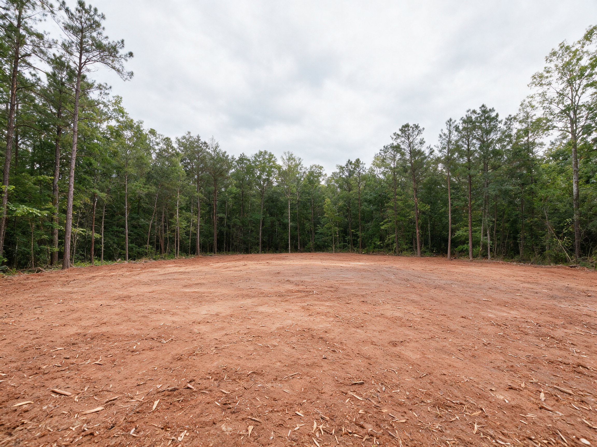

Firebreak & Fuel Reduction in Charlotte, NC
When a house or barn sits tight against thick woods, brush, vines, and dead material pile up right next to the walls. That's fuel. On wooded acreage around Charlotte, reducing that buildup near your structures is one practical step toward a property that's better prepared and easier to maintain.
We mulch the brush, ladder fuels, and dead growth around homes, barns, and outbuildings, and can cut firebreak strips along woods edges, all without burning anything.
- Brush & dead fuel cut back from structures
- Ladder fuels reduced
- Nothing burned, nothing hauled
Get a Free Fuel Reduction Estimate
Tell us what structures you want space around and how close the woods are. We'll call within one business day.
Thanks, we've got it.
Thanks. We'll call within one business day to walk the property and talk through the zones.
- Owner on Every JobHe walks your property and runs the work
- Licensed & InsuredCertificates provided on request
- Free On-Site EstimatesWe map the zones with you first
- Structure-Focused ClearingFuel reduced where it matters most
What Our Fuel Reduction Process Is
Fuel reduction starts at the structure and works outward. These four steps decide what comes out, where, and how much.
-
01
Walk the Structures
We walk around your home, barn, and outbuildings with you, looking at how close the brush, vines, and woods come to each one.
-
02
Set the Zones
We agree on how far out to clear near each structure and where a firebreak strip along the woods edge makes sense.
-
03
Mulch the Fuel
Brush, vines, dead material, and small trees are mulched, and low growth beneath keeper trees is cleared out.
-
04
Talk Maintenance
We walk the finished area with you and talk through how often to re-cut so the space stays open.
Where We Serve for Fuel Reduction
We clear around structures on wooded properties throughout Charlotte and the nearby towns below. Town pages are coming. The main forestry mulching page covers the full service area.
Reducing Fuel Around Homes on Wooded Acreage
A Practical Step, Not a Guarantee
We want to be upfront: no clearing work can promise that a property won't burn, and we don't claim to provide fire protection. What fuel reduction does is remove some of the brush, vines, and dead material that would otherwise sit right against your structures, so there's less to burn close to them. It's one part of being prepared. For guidance on protecting your home, the North Carolina Forest Service and your local fire department are the right resources.
Who Asks for This Around Charlotte
Most of the calls we get come from people living on wooded acreage on the edges of the region: a house set back in the trees, a barn tucked against the woods, or a cabin surrounded by pine and thick undergrowth. Many have watched the brush creep closer every year and simply want it pushed back. Some are thinking about dry fall weather, when leaf litter and dead material pile up in the Piedmont woods.
Starting Close to the Structure
Guidance from fire agencies generally focuses first on the area immediately around a building, then on a wider zone beyond it. In practice, that means getting the brush, vines, and dense growth away from the walls, decks, and outbuildings, then thinning and cleaning up the area beyond. We'll mulch the dense growth near each structure and leave a cleaner, more open area that's easier to keep up with. Planting beds and landscaping right against the house are usually yours to manage.
Ladder Fuels
Ladder fuels are the vines, shrubs, and small trees that connect the ground to the lower branches of bigger trees. In Piedmont woods, that's often privet, honeysuckle, greenbrier, and young pines growing beneath taller trees. Removing that middle layer creates a gap between the ground and the canopy. We mulch the understory and the low growth beneath keeper trees, and we'll point out low limbs that you may want trimmed by a tree service.
Firebreak Strips Along Woods Edges
On larger properties, some owners want a cleared strip along the edge of the woods, between a field and the trees, or around the perimeter of a home site. A mulched strip removes brush and small trees, and some owners keep it mowed to maintain the opening. We'll talk through the width and location that make sense for your property.
No Burning, and the Rules
It doesn't make much sense to reduce fuel by building burn piles, and open burning of clearing debris is heavily restricted in Mecklenburg County anyway. Mulching grinds the material into small pieces and spreads it out instead of leaving it heaped. If your woods include a creek, Mecklenburg County stream buffer rules may limit clearing near the bank, so confirm with the city or county what applies before we work there.

Woods growing right up to the house?
Walk the property with us. We'll talk through where to clear and how far out it makes sense to go.
Plan My Fuel ReductionOther Services We Provide in Charlotte
Firebreak and fuel reduction is one of eight forestry mulching services we offer in Charlotte. Here's the rest of what we do, grouped by category.
Why Charlotte Owners Choose Us for Fuel Reduction
Focused on Your Structures
We start where it matters most, right around the house and outbuildings, and work outward from there.
Straight Talk
We'll tell you plainly what this work can and can't do, without overselling it as fire protection.
No Burn Piles
Fuel is mulched and spread out, not stacked into piles that become fuel of their own.
Keeper Trees Respected
We clear brush and ladder fuels beneath the trees you want to keep, rather than removing them.
Fuel reduction is practical work that makes a wooded property tidier and easier to manage, with less brush built up against your buildings. We'll be honest about what it does, focus on the areas around your structures, and leave a space you can keep open with simple maintenance.
Charlotte Fuel Reduction FAQs
Will fuel reduction protect my home from fire?
No clearing can guarantee that. Reducing brush and dead material near your structures leaves less fuel close to them, which is one part of being prepared. The North Carolina Forest Service and your local fire department can advise on home protection.
What are ladder fuels?
Ladder fuels are the vines, shrubs, and small trees that connect the ground to the lower branches of larger trees. Removing them creates a gap between the forest floor and the canopy.
How far from my house should you clear?
Agency guidance generally starts with the area immediately around a building and extends outward from there. We'll walk your property and talk through a distance that fits your structures, your trees, and your goals.
Will you remove the trees near my house?
Our focus is the brush, vines, dead material, and small trees. We clear beneath keeper trees rather than removing them. Large trees or limbs over a roof are usually a job for a tree service.
Does the mulch you leave behind add fuel?
Mulching breaks the material into small pieces and spreads it out rather than leaving brush piled up. We can keep mulch lighter right around structures. Ask during the walk-through how we'll handle it on your property.
Can you cut a firebreak along my tree line?
Yes. We can mulch a cleared strip along a woods edge or around a home site at the width you choose. Many owners keep the strip mowed afterward.
How often does fuel reduction need to be redone?
Brush in the Piedmont grows back. Most owners need some maintenance every year or two, and a re-cut goes much faster than the first clearing.
Can you burn the brush instead of mulching it?
We don't burn. Open burning of clearing debris is heavily restricted in Mecklenburg County, and mulching avoids burning entirely.
Take back your overgrown land.
Free walk-through and written estimate for forestry mulching in Charlotte.